As melhores bancas do Brasil, comentadas de verdade.
ENAMED, ENARE, USP-SP, FM USP, UNIFESP, Einstein, Sírio-Libanês, Revalida e mais de 25 bancas, atualizadas até 2026, com gabarito comentado que ensina o raciocínio clínico por trás da resposta, não só a alternativa certa.
Atualizadas até 2026Provas recentes das principais instituições, com novas bancas entrando no acervo.
Comentadas por alternativaExplicação didática de cada opção. Você entende por que errou e por que acertou.
Com aprofundamentoFisiopatologia e diagnóstico diferencial, no padrão que a banca cobra.
ENAMEDENAREUSP-SPFM USPUNIFESPUFRJUERJEINSTEINSÍRIO-LIBANÊSREVALIDAFAMEMAFAMERPUNESPHCPASUS-SPSMS-SPSCMSPIAMSPESES-DFFMABCUELUEMUNIPUSP-RP+ novas bancas em atualização
ENAMED: obrigatório para concluintes desde 2025. A prova oficial já está no app, comentada, no formato de 100 questões objetivas.
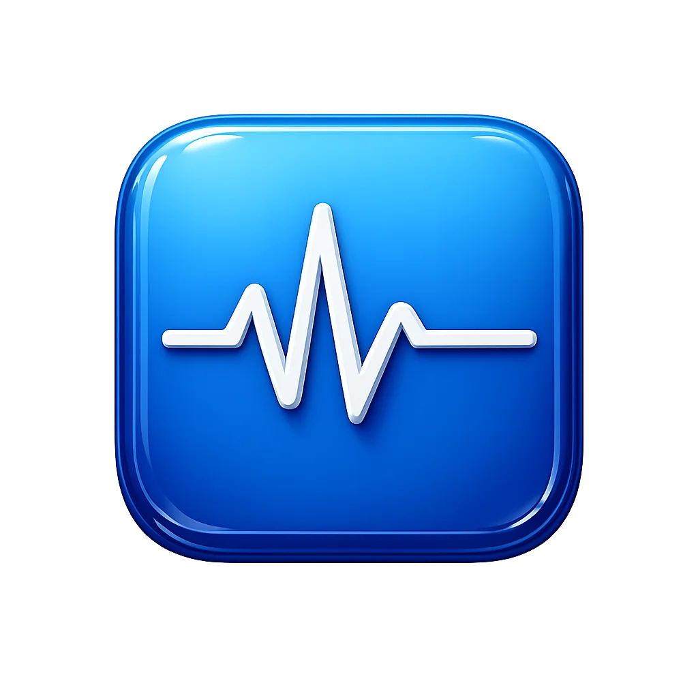
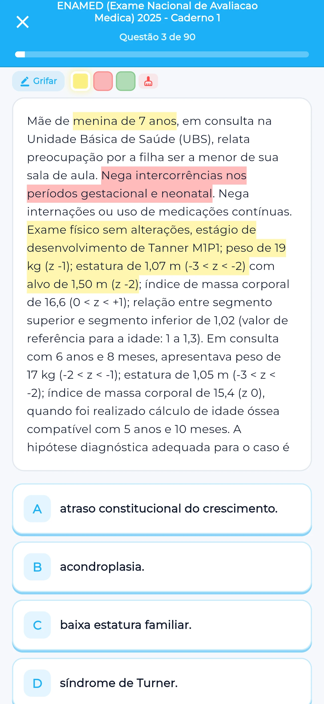
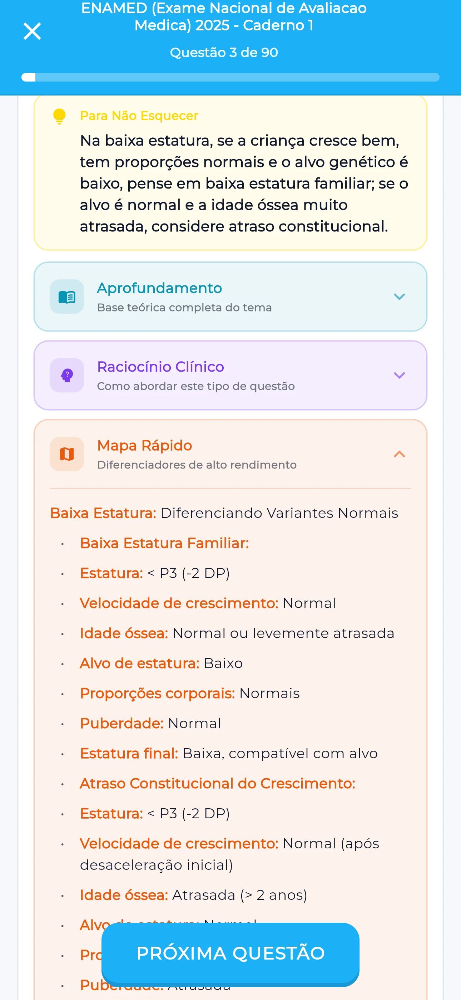
EINSTEIN 2026Questão 1 de 145
Homem de 58 anos, não tabagista, sem antecedentes familiares de fratura por fragilidade, apresenta fratura de rádio distal após queda da própria altura. Relata fadiga crônica e diminuição da libido nos últimos anos. Não faz uso de corticoides, álcool em excesso ou outras medicações sabidamente relacionadas a osteoporose. Exames laboratoriais prévios mostram função renal normal.
De acordo com as recomendações para investigação de osteoporose em homens, qual é a conduta diagnóstica mais adequada?
A
Incorreta. O tratamento empírico sem investigação completa pode mascarar doenças subjacentes graves e não otimizar o manejo. A pesquisa de causas secundárias não deve ser adiada.
B
Incorreta. Embora neoplasias sejam causas secundárias importantes, focar a investigação *inicialmente* apenas nelas é incompleto. A avaliação da DMO e outros marcadores metabólicos são essenciais para um diagnóstico completo.
C
Incorreta. A DXA é fundamental, mas não deve ser o exame inicial isolado em homens com suspeita de osteoporose secundária. A investigação laboratorial é crucial para identificar causas tratáveis.
D
Correta. Esta alternativa abrange a abordagem recomendada pelas diretrizes, combinando a avaliação da densidade mineral óssea com a investigação laboratorial para causas secundárias, reconhecendo sua alta prevalência em homens.
Explicação editorial da questão
Para Não Esquecer
Em homens com fratura por fragilidade, a investigação deve ser dupla: densitometria óssea (DXA) e pesquisa laboratorial de causas secundárias, pois até metade dos casos podem ter etiologia secundária.
Diagnóstico
A osteoporose em homens, embora menos prevalente que em mulheres pós-menopausa, representa um desafio diagnóstico e terapêutico significativo, especialmente em pacientes com fraturas por fragilidade.
Quadro Clínico
A apresentação clínica do paciente de 58 anos, com fratura de rádio distal após queda de baixa energia, fadiga crônica e diminuição da libido, levanta a suspeita de osteoporose e de causas secundárias.
Fisiopatologia
A fisiopatologia da osteoporose envolve um desequilíbrio entre a reabsorção óssea (osteoclastos) e a formação óssea (osteoblastos), levando à diminuição da massa óssea e deterioração da microarquitetura do tecido ósseo, resultando em fragilidade e aumento do risco de fraturas.
Em homens, a osteoporose pode ser primária (relacionada ao envelhecimento e deficiência de testosterona) ou secundária a diversas condições, como hipogonadismo, uso de glicocorticoides, distúrbios gastrointestinais com má absorção, doenças endócrinas (hiperparatireoidismo, hipertireoidismo), deficiência de vitamina D, e malignidades (mieloma múltiplo, câncer de próstata metastático).
A investigação de causas secundárias é crucial, pois até 50% dos casos de osteoporose em homens adultos podem ter uma etiologia secundária identificável, conforme sugerido por estudos e diretrizes.
A abordagem diagnóstica deve ser abrangente, combinando a avaliação da densidade mineral óssea (DMO) com a investigação laboratorial direcionada.
Epidemiologia
O caso clínico descreve um homem de 58 anos com fratura por fragilidade (rádio distal após queda da própria altura), fadiga crônica e diminuição da libido, sem fatores de risco clássicos para osteoporose primária em homens (como uso de corticoides, álcool em excesso, tabagismo ou história familiar).
A presença de fratura por fragilidade em um homem com menos de 70 anos, sem fatores de risco óbvios, sugere fortemente a necessidade de investigação para osteoporose e suas causas secundárias.
Tratamento e Conduta
A alternativa D propõe a conduta mais adequada, que é a combinação da densitometria óssea (DXA) com uma investigação laboratorial inicial abrangente.
Epidemiologia
Esta abordagem reconhece a alta prevalência de causas secundárias em homens e a importância de identificar e tratar essas condições.
Análise das Alternativas
A alternativa C está incorreta porque isolar a DXA como exame inicial e postergar a investigação laboratorial ignora a alta taxa de causas secundárias em homens.
Diagnóstico
A alternativa A está incorreta ao sugerir tratamento empírico e adiar a investigação de causas secundárias, o que pode levar a atrasos no diagnóstico de doenças subjacentes graves e a um tratamento subótimo.
A alternativa B está incorreta porque, embora neoplasias ocultas sejam causas secundárias importantes, direcionar a investigação inicial apenas para elas, sem incluir a avaliação da DMO e outros marcadores metabólicos ósseos, é incompleto e pode atrasar o diagnóstico de outras causas secundárias ou de osteoporose primária.
Análise das Alternativas
Portanto, a alternativa D, que combina a avaliação da DMO com a investigação laboratorial completa, é a mais adequada.
Investigação de Osteoporose em Homens
Fratura por Fragilidade em Homem < 70 anos OU DMO baixa em qualquer homem:
Função renal (ureia, creatinina, taxa de filtração glomerular)
Testosterona total (em homens com sintomas de hipogonadismo ou achados sugestivos)
TSH (se clinicamente indicado)
Eletroforese de proteínas séricas e urinárias (se suspeita de mieloma múltiplo)
PSA (se suspeita de câncer de próstata)
Conduta: Se DMO compatível com osteoporose (T-score ≤ -2.5) OU fratura por fragilidade: iniciar tratamento. Tratar causas secundárias identificadas.
Osteoporose em homens: menos comum, mas com alta taxa de causas secundárias.
Fratura por fragilidade em homens < 70 anos: indica investigação.
DXA: exame padrão para DMO.
Investigação laboratorial: essencial para causas secundárias (hipogonadismo, deficiência de vitamina D, etc.).
Até 50% dos casos em homens têm causa secundária.
Conduta: DXA + laboratório inicial abrangente.
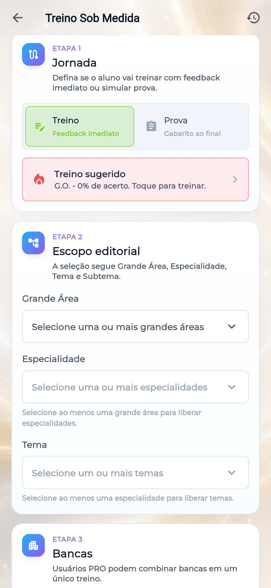
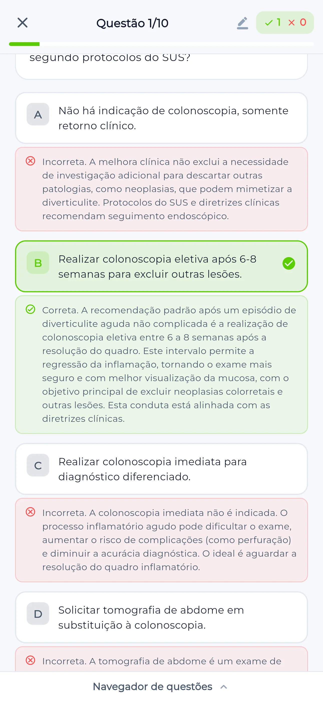
Treino Sob Medida
Monte a prova do seu jeito.
Escolha a banca, a área e o tema, defina o tamanho e gere o simulado na hora. Faça, revise cada questão comentada e volte no que você errou.
01
JornadaTreino com feedback imediato ou modo Prova, com gabarito ao final.
02
Escopo editorialGrande Área → Especialidade → Tema → Subtema: você controla o recorte.
03
BancasMais de 20 bancas: escolha uma ou combine várias no mesmo treino (PRO).
E quando você trava, o app sugere o próximo treino pelo seu ponto fraco, direto do seu desempenho real.
Treino Sob Medida
ETAPA 2Escopo editorial
A seleção segue Grande Área, Especialidade, Tema e Subtema.
Grande Área
Especialidade
Selecione ao menos uma grande área para liberar especialidades.
Tema
Selecione ao menos uma especialidade para liberar temas.
Subtema
Selecione ao menos um tema para liberar subtemas.
ETAPA 3Bancas
Usuários PRO podem combinar bancas em um único treino.
PRO: toque em mais de uma banca para treinar com questões de múltiplas fontes simultaneamente.
Grande Área
0 selecionados - 0/0 visíveis
Trilha Clínica
Estude medicina como quem joga, e não pare no meio.
Missões clínicas por especialidade, um Caso-Chefe no fim de cada região, XP, ofensiva diária e patentes de Interno a Chefe de Equipe. Cada acerto vira progresso visível no seu Raio-X Acadêmico.
Caso-Chefe 6 patentes Ofensiva diária Missão do dia Raio-X Acadêmico
Cada missão nasce dos protocolos brasileiros do acervo; a fonte aparece dentro do próprio jogo.
Conteúdo para a prova. E uma ponte para a prática.
Você estuda para passar e já chega no internato sabendo usar protocolo, dose e escore.
Prática
Prática clínica
Protocolos
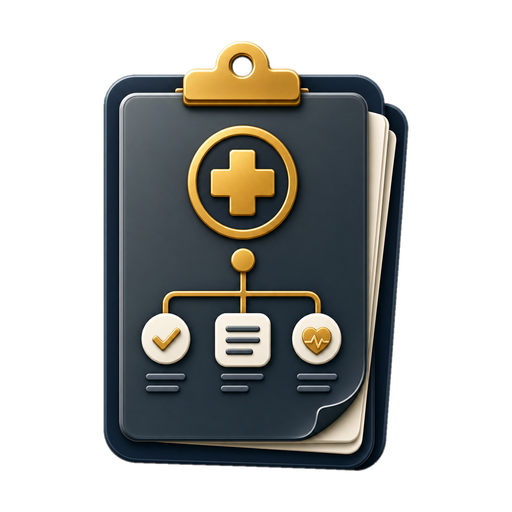
Conduta brasileira pronta para o leito.
CID-10
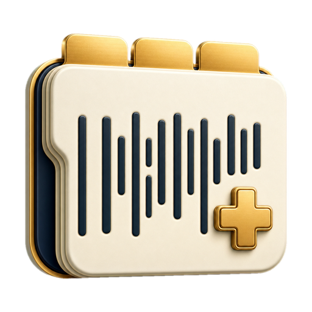
Código, contexto e busca sem atrito.
SmartBulas
Alerta ativo e dose conferida.
Calculadoras
120+ escores no ponto da decisão.
Meu Plantão
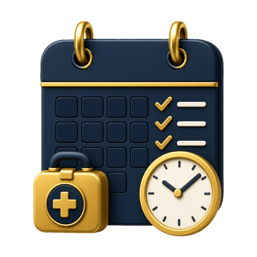
Pacientes, pendências e passagem estruturados.
Protocolos
Conduta brasileira pronta para o leito.
CID-10
Código, contexto e busca sem atrito.
SmartBulas
Alerta ativo e dose conferida.
Calculadoras
120+ escores no ponto da decisão.
Meu Plantão
Pacientes, pendências e passagem estruturados.
Estudos
Estudar e passar
Questões
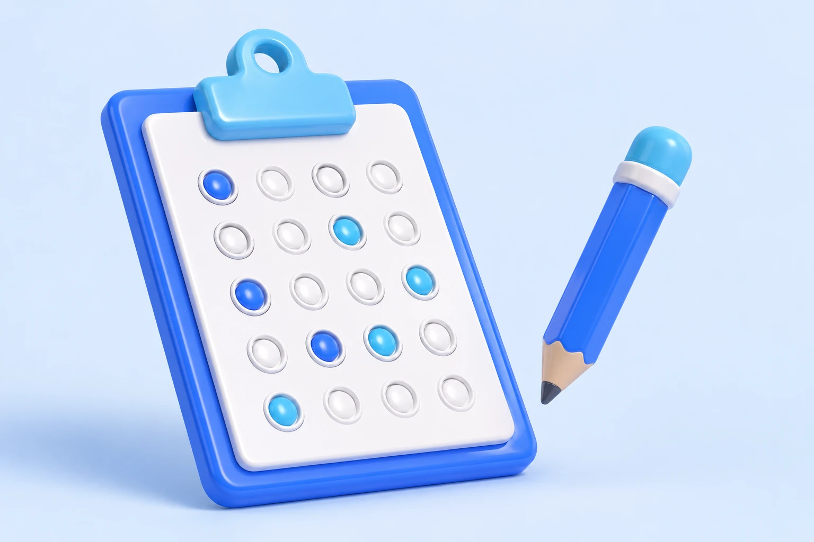
30.000+ questões comentadas.
Simulados
Comentados, com explicação didática.
Casos clínicos
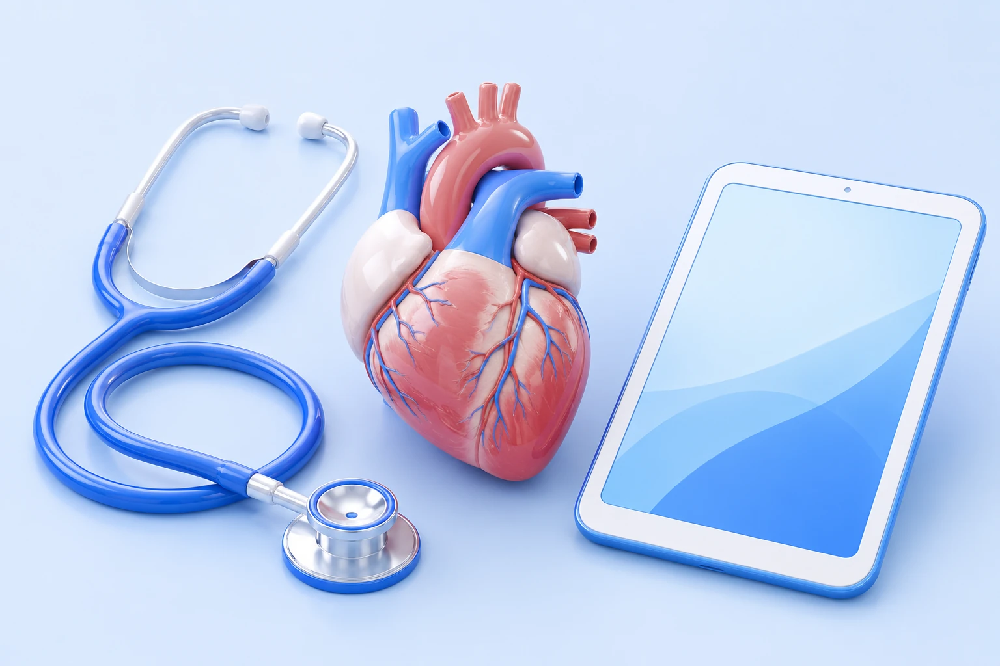
Raciocínio guiado por caso.
Flashcards
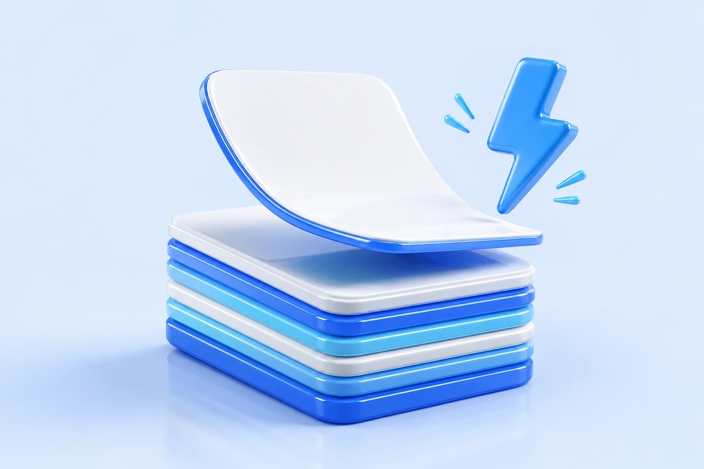
Revisão ativa para reconhecer o quadro.
Biblioteca
Resumos objetivos por especialidade.
Questões
30.000+ questões comentadas.
Simulados
Comentados, com explicação didática.
Casos clínicos
Raciocínio guiado por caso.
Flashcards
Revisão ativa para reconhecer o quadro.
Biblioteca
Resumos objetivos por especialidade.
Depoimentos
Quem estuda com o Ausculto, recomenda.
★★★★★
O Raio-X Acadêmico me mostrou onde eu precisava revisar por especialidade. Ficou muito mais fácil decidir o próximo estudo.
Camila MenonEstudante de Medicina · 4.º ano
★★★★★
Uso todos os dias nos estágios e nas aulas clínicas. As calculadoras e os protocolos me ajudam a entender a lógica clínica muito antes de chegar na residência.
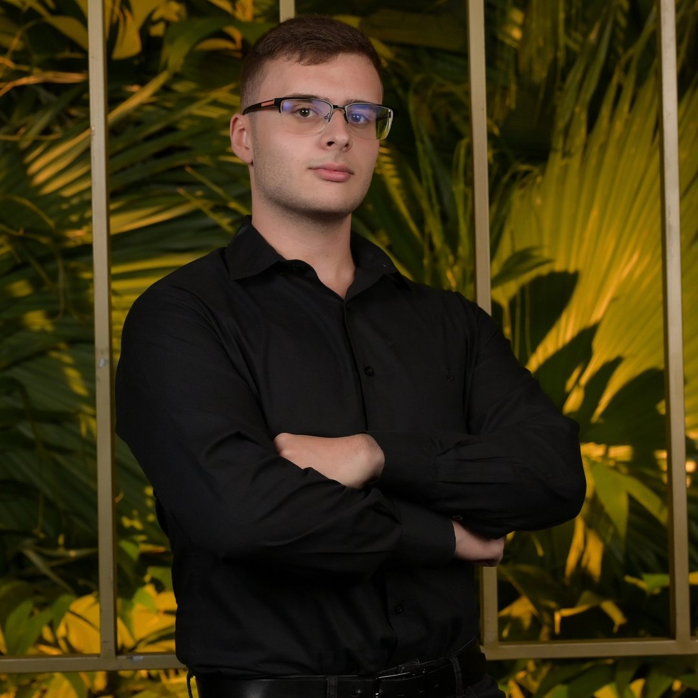
Guilherme de LucioEstudante de Medicina · 4.º ano
★★★★★
O Ausculto virou meu companheiro de plantão. Tenho todos os protocolos na palma da mão e a IA me ajuda a pensar nos casos difíceis.
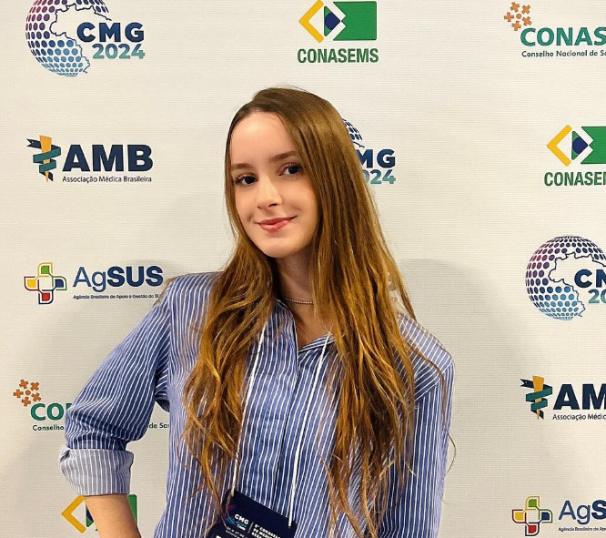
Loren FerrareziEstudante de Medicina · 6.º ano
Por que o Ausculto
Estudo ativo, conteúdo brasileiro e o app que segue com você.
Não é mais um banco de questões genérico: é estudo que fixa, no contexto das bancas brasileiras, e que continua com você depois da aprovação.
Conteúdo no contexto brasileiro
Questões, condutas e diretrizes com foco nas bancas e nas sociedades médicas do Brasil.
Estudo que fixa, não decoreba
Revisão ativa e casos clínicos para reconhecer a doença, não só marcar a alternativa.
Não vence quando você se forma
O mesmo app que te aprova na residência vira sua ferramenta de plantão depois.
Sobre o conteúdo: o Ausculto é uma ferramenta de apoio ao estudo, educacional e complementar à sua formação médica. Não substitui aulas, professores nem as diretrizes vigentes.
Comece agora
Comece a estudar do jeito certo hoje.
Grátis, sem cartão de crédito. Faça seu primeiro simulado em poucos minutos e veja onde você está.
Assinaturas renovam automaticamente até o cancelamento, conforme o canal de compra. Valores e disponibilidade de cada módulo são confirmados no checkout.